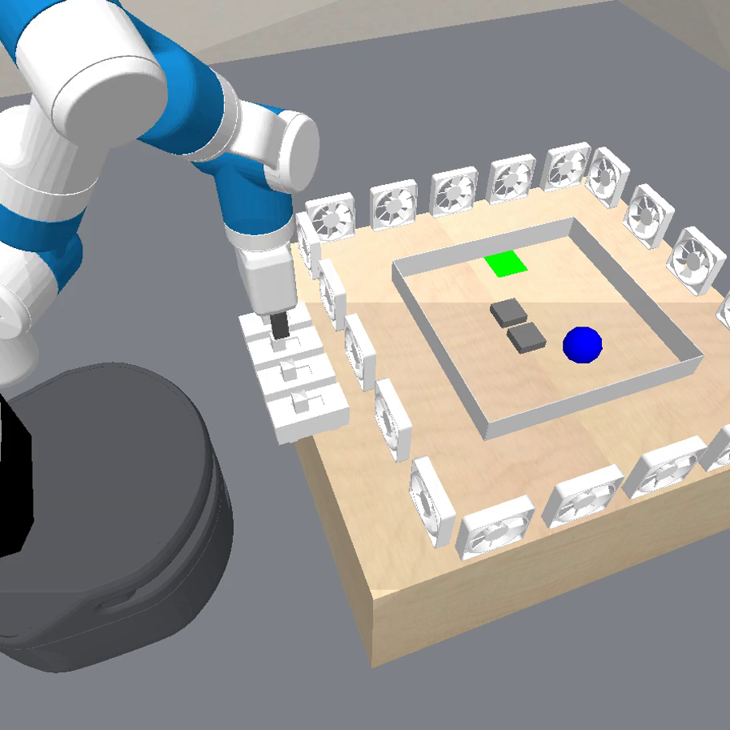

<!doctype html>
<html lang="en">
<head>
<meta charset="utf-8">
<title>Weekly Sync 2026-08-13: Fan - Learning Wind Through the Engine</title>
<meta name="viewport" content="width=device-width, initial-scale=1.0">
<link rel="stylesheet" href="https://cdn.jsdelivr.net/npm/reveal.js@4.6.1/dist/reveal.css">
<link rel="stylesheet" href="https://cdn.jsdelivr.net/npm/reveal.js@4.6.1/dist/theme/white.css">
<link rel="stylesheet" href="https://cdn.jsdelivr.net/npm/reveal.js@4.6.1/plugin/highlight/monokai.css">
<style>
  .reveal { font-size: 28px; }
  .reveal h1 { font-size: 1.5em; }
  .reveal h2 { font-size: 1.1em; margin-bottom: 0.55em; }
  .reveal ul { font-size: 0.8em; line-height: 1.42; display: block; }
  .reveal ol { font-size: 0.8em; line-height: 1.42; display: block; }
  .reveal li { margin: 0.26em 0; }
  .reveal table { font-size: 0.62em; margin: 0 auto; }
  .reveal table th, .reveal table td { padding: 0.28em 0.6em; }
  .reveal .small { font-size: 0.58em; color: #555; }
  .reveal .good { color: #1a7a1a; }
  .reveal .bad { color: #a01515; }
  .reveal .hl { color: #b3541e; font-weight: 600; }
  .reveal .new { display: inline-block; background: #b3541e; color: #fff; font-size: 0.62em; font-weight: 700; padding: 0.05em 0.45em; border-radius: 0.4em; vertical-align: middle; }
  .reveal img { max-height: 520px; }
  .reveal pre { font-size: 0.52em; width: 96%; line-height: 1.3; box-shadow: none; border: 1px solid #ddd; }
  .reveal pre code { max-height: 520px; padding: 0.6em; }
  .reveal code { color: #2a5d8a; }
  .reveal p { font-size: 0.8em; }
</style>
</head>
<body>
<div class="reveal"><div class="slides">

<!-- ======================================================================
  Slides are Markdown inside the script block below, separated by a blank
  line, a line of three dashes, a blank line. "Note:" lines are speaker
  notes (press S). Figures live in assets/ (the fan before/after 1x3
  mosaics built from the runs' saved episode videos) and the command-
  channel diagram is inline SVG on its slide.
======================================================================= -->

<section data-markdown data-separator="^\r?\n---\r?\n$" data-separator-notes="^Note:">
<script type="text/template">

# Predicator v3 sync, 2026-08-13<br>
<!-- .element: class="small" -->

Goal: a world-model-learning agent that learns from a few interactions and solves complex tasks.
<!-- .element: class="small" -->

Note: Last week ended with domino swept 10/10. This week the same agent stack moved to the fan env, failed for an interesting representational reason, and now solves it after a re-architecture: learned rules can act through the physics engine instead of re-deriving contact dynamics in a feature DSL.

---

## Recap: up to last week

- Domino mismatch tasks <span class="good">swept 10/10</span>: the agent identifies friction in-run and solves turn tasks.
- The sysID pipeline was not as clean / principled as we had hoped:
  - only parameters verdicted identified are applied to the belief env;
  - automatic sweep across registered physical parameters before learning to aid parameter selection.
- Next target named then: fans.

Note: One correction of scope from the outline: the auto-sweep being removed this week is not the capture gate's physics-margin sweep - that one stays. What was removed is the always-on parameter-registry sweep inside the sim.residuals probe, two slides ahead.

---

## Recap: the `sim` API - the agent's hands on its belief model

The agent writes Python in sandboxed code cells (`explore_python` in solve/explore sessions, `run_python` in synthesis); `sim` is a probe over the <span class="hl">belief env</span> = base sim + the agent's own learned artifacts (simulator.py rules, fitted params, invented predicates).
<!-- .element: class="small" -->

| method | what it does |
|---|---|
| `sim.reset(task)` / `sim.snapshot()` | jump to a task's initial state; bank/restore states |
| `sim.state()` / `sim.atoms()` / `sim.render()` | feature dict, true ground atoms, image of the current state |
| `sim.run(plan, trials=, contacts=, physics_sweep=)` | execute an option plan: rollouts, multi-trial reliability, contact reports, physics-margin preview |
| `sim.refine(sketch)` | backtracking parameter search for a plan sketch from the current state |
| `sim.fit(...)` | Bayesian MAP sysID of the candidate simulator's declared params, with identifiability report |
| `sim.residuals(...)` | how wrong is my simulator: per-step (teacher-forced) + open-loop rollout disagreement vs recorded data |

Everything downstream (plan capture, exploration, model revision) is the agent composing these calls; the next slide is this week's change to `sim.residuals`.
<!-- .element: class="small" -->

Note: Division of labor worth stating if asked: sim.residuals sweeps are one-parameter-at-a-time (each named param swept alone, all others held at baseline); phys_params={...} scores one JOINT point, so the agent can compose its own joint sweeps; sim.fit is where genuinely joint estimation happens (MAP over all declared params together). The probe never mutates the real env - it is entirely belief-side.

---

## `sim.residuals`: registry auto-sweep removed <span class="new">NEW</span>

- The open-loop residual report used to <span class="hl">auto-sweep the whole parameter registry</span> on every call: registry &times; grid points &times; segments fresh-env rollouts, and segments grow every cycle.
- Now `rollout=True` returns the baseline free-running report and simply lists the registry with a nudge; `sweep_params=[...]` opts in per parameter.
- New composable primitive: `phys_params={name: value}` scores the recorded data at <span class="hl">one hypothesized point</span> (baseline/point SSE ratio), so the agent can write its own targeted sweeps instead of paying for a blanket one.

Note: Rationale: the blanket sweep was both slow and paternalistic - it decided for the agent what was worth measuring. The point-scoring primitive is the same capability decomposed: the agent asks "how consistent is the data with friction 0.3" as a single cheap query and composes its own search. PR #128.

---

## This week's experiment env: fan

<div style="display: flex; gap: 0.6em; align-items: center; justify-content: center;">

<pre style="font-size: 10.5px; line-height: 1.18; flex: 0 1 auto; width: auto; margin: 0; padding: 0.5em; overflow: hidden;"><code class="nohighlight" style="color: #333; background: #fafafa;">############################ STATE ############################
type: ball       x      y     z    radius
------------  ----  -----  ----  --------
ball          0.67  1.644  0.44      0.04
&nbsp;
type: boundary       x      y     z    rot    x_len    y_len    z_len
----------------  ----  -----  ----  -----  -------  -------  -------
boundary_down     0.75  1.524  0.43      0    0.24     0.002     0.06
boundary_left     0.63  1.644  0.43      0    0.002    0.24      0.06
boundary_right    0.87  1.644  0.43      0    0.002    0.24      0.06
boundary_up       0.75  1.764  0.43      0    0.24     0.002     0.06
&nbsp;
type: fan        x      y     z       rot    facing_side    is_on
-----------  -----  -----  ----  --------  -------------  -------
fan_0        0.32   1.316  0.46   0                    0        0
fan_1        1.18   1.316  0.46   3.14159              1        0
fan_2        0.398  1.238  0.46   1.5708               2        0
fan_3        0.398  2.05   0.46  -1.5708               3        0
&nbsp;
type: robot           x       y         z    fingers    roll    tilt     wrist
-------------  --------  ------  --------  ---------  ------  ------  --------
robot          0.749818  1.0799  0.649467       0.04       0  1.5708  -1.57092
&nbsp;
type: target       x      y    z    rot    is_hit
--------------  ----  -----  ---  -----  --------
target          0.75  1.724  0.4      0         0
&nbsp;
type: wall       x      y     z    rot    x_len    y_len    z_len
------------  ----  -----  ----  -----  -------  -------  -------
wall0         0.83  1.644  0.41      0     0.06     0.06     0.02
###############################################################</code></pre>
</div>

4 switch-controlled fan banks blow a ball around a maze; blockers and boundary constrain the path, goal = ball parked on the target cell.
<!-- .element: class="small" -->

Note: The agent sees poses and switch states, never a wind feature. The only way to learn the mechanism is to act, watch the ball move, and write a model of why. That makes fan the first env where the learned residual IS the actuation, not a correction on top of it.

---

## The old GT wind model: contact dynamics by hand

```python
def _wind_blowing(state, updates, params):        # 251-line file: rule + 3 geometry helpers
    ...                                           # sum on-fan directions from rot
    dx *= params["ball_speed"]; dy *= params["ball_speed"]   # kinematic step, no forces
    stops = _blocker_stops(state, blockers, ball_z, radius,  # per-blocker reach/overlap
                           params["contact_slack"])          # fitted penetration fudge
    new_x = _axis_move(bx, by, dx, stops, 0)      # x then y, so a blocked axis still
    new_y = _axis_move(by, new_x, dy, stops, 1)   # slides along the wall face
    updates[ball]["x"] = new_x; updates[ball]["y"] = new_y   # overwrite pose features

def _axis_move(pos, perp, delta, blockers, along_idx):
    """Move one coordinate by delta with hard stops, never backward."""
    for blocker in blockers:
        if (delta > 0.0) != (pos < b_along): continue    # approaching from behind: free
        overlap_perp = stop_perp - abs(perp - b_perp)
        if overlap_perp <= 0.0: continue                 # beside the blocker: free
        overlap_along = stop_along - abs(pos - b_along)
        if overlap_along > 0.0:                          # already interpenetrating:
            if overlap_along < overlap_perp:             # minimum-translation rule picks
                cand = min(cand, pos) ...                # the blocking axis (stop vs slide)
        face = b_along - stop_along if delta > 0.0 else b_along + stop_along
        cand = min(cand, face) ...                       # park on the blocker face
```
condensed excerpt
<!-- .element: class="small" -->

- <span class="bad">Not physics</span>: it teleports `ball.x/y` each action - no velocity or momentum, and the engine's contact solver is bypassed, then <span class="hl">re-implemented in Python</span> (reach, overlap, minimum-translation sliding).
- <span class="bad">The truth is expensive</span>: the correct model costs <span class="bad">251 lines</span> in this representation - vs <span class="good">~28 lines</span> once a rule can simply apply a force and let the engine own contacts (coming up).

Note: This is the FINAL feature-DSL version, which already reads geometry from observed state (post Fix 1); the version the failed runs competed against also needed privileged env constants. The third bullet is the core argument of the deck: in this representation the true model is the longest program in the neighborhood, so a prior over short programs actively steers synthesis away from the truth.

---

## Baseline: oracle world model solves it; the learning agent did not

- <span class="good">`agent_oracle_hybrid_sim` (GT wind rules + planner) solves the fan test task 1/1 on all 5 seeds</span> - the planning/manipulation side is fine.
- The learning arm (run_20260808_113951) wrote three confident, wrong wind models in the feature DSL.
<!-- : an edge-triggered <span class="bad">decaying "puff"</span> (seed 0), a <span class="bad">one-shot gust</span> with a fabricated beam-width gate (seed 1), a force law with the <span class="bad">target as an infinite collision plane</span> (seed 2). Seeds 0/1: no test solve; seed 2 passed test but went 0/6 on train. -->
- Two structural causes, both fixed this week:
  1. <span class="hl">walls/boundary were not objects in the state</span> - the GT contact rule itself needed privileged env constants, so no honest hypothesis space contained the right model;
  2. the rules DSL could only <span class="hl">overwrite pose features</span>, so any wind model had to re-derive contact geometry by hand (~200 lines) instead of pushing the ball and letting the engine do contacts.

Note: The deepest postmortem finding: wall collisions were misread as wind physics. Every training trajectory ended with the ball parked against a wall - often the invisible boundary wall absent from state - and each seed absorbed that stop into its force law. One long Wait with the ball in open space would have falsified all three models. Full analysis: docs/slides/fan_model_learning_postmortem_slides.html. The representation made the wrong models cheaper to write than the right one - that's the motivation for both fixes.

---

## Fix 1: collision geometry is now observed state <span class="new">NEW</span>

- The arena boundary is promoted to four first-class `boundary` objects; walls and boundary expose <span class="hl">pose + box extents</span> (`x_len/y_len/z_len`, their axis-aligned bounding box in world frame), and the ball gets a `radius` feature.
<!-- - Boundary bodies are rebuilt from their own state features (not inferred from the target's grid position), so <span class="hl">what the ball collides with is exactly what the agent observes</span> - transfers across grid sizes. -->
- The GT residual simulator was rewritten on top: one contact law over both blocker types with stop distances computed from observed extents - <span class="hl">no privileged env access</span>, same hypothesis space as agent-written simulators.

Note: This is the "purely position checks" item from the outline, made concrete: contact predicates/rules can now be written from state features alone. It also made the GT program an honest member of the hypothesis space, which matters when we score agent models against it. PR #126.

---

## Fix 2: a physics-command channel for learned rules <span class="new">NEW</span>

<svg viewBox="0 0 1180 300" style="width: 96%; height: auto; display: block; margin: 0.2em auto;" xmlns="http://www.w3.org/2000/svg">
  <defs>
    <marker id="arr" viewBox="0 0 10 10" refX="9" refY="5" markerWidth="7" markerHeight="7" orient="auto-start-reverse">
      <path d="M 0 0 L 10 5 L 0 10 z" fill="#555"/>
    </marker>
  </defs>
  <!-- rule box -->
  <rect x="15" y="60" width="270" height="130" rx="10" fill="#fdf3ec" stroke="#b3541e" stroke-width="2"/>
  <text x="150" y="88" text-anchor="middle" font-size="21" font-weight="700" fill="#b3541e">learned rule (simulator.py)</text>
  <text x="150" y="118" text-anchor="middle" font-size="18" fill="#333" font-family="monospace">rule(state, updates,</text>
  <text x="150" y="141" text-anchor="middle" font-size="18" fill="#333" font-family="monospace">params, cmds)</text>
  <text x="150" y="170" text-anchor="middle" font-size="17" fill="#666">runs once per agent action</text>
  <!-- buffer box -->
  <rect x="345" y="60" width="250" height="130" rx="10" fill="#eef3f8" stroke="#2a5d8a" stroke-width="2"/>
  <text x="470" y="88" text-anchor="middle" font-size="21" font-weight="700" fill="#2a5d8a">CommandBuffer</text>
  <text x="470" y="116" text-anchor="middle" font-size="17" fill="#333" font-family="monospace">apply_force(obj, F)</text>
  <text x="470" y="138" text-anchor="middle" font-size="17" fill="#333" font-family="monospace">apply_torque(obj, T)</text>
  <text x="470" y="160" text-anchor="middle" font-size="17" fill="#333" font-family="monospace">set_velocity(obj, v, w)</text>
  <text x="470" y="182" text-anchor="middle" font-size="16" fill="#666">pure data, by object name</text>
  <!-- env box -->
  <rect x="655" y="40" width="290" height="170" rx="10" fill="#eef8ee" stroke="#1a7a1a" stroke-width="2"/>
  <text x="800" y="68" text-anchor="middle" font-size="21" font-weight="700" fill="#1a7a1a">base env, next action</text>
  <text x="800" y="96" text-anchor="middle" font-size="17" fill="#333">20 physics substeps:</text>
  <text x="800" y="120" text-anchor="middle" font-size="17" fill="#333" font-family="monospace">applyExternalForce(...)</text>
  <text x="800" y="143" text-anchor="middle" font-size="17" fill="#333" font-family="monospace">p.stepSimulation()</text>
  <text x="800" y="172" text-anchor="middle" font-size="16" fill="#666">re-applied every substep</text>
  <text x="800" y="194" text-anchor="middle" font-size="16" fill="#666">(PyBullet clears forces each step)</text>
  <!-- engine box -->
  <rect x="1000" y="60" width="165" height="130" rx="10" fill="#f4f4f4" stroke="#777" stroke-width="2"/>
  <text x="1082" y="100" text-anchor="middle" font-size="19" font-weight="700" fill="#444">engine owns</text>
  <text x="1082" y="126" text-anchor="middle" font-size="17" fill="#444">contacts, friction,</text>
  <text x="1082" y="149" text-anchor="middle" font-size="17" fill="#444">restitution, damping</text>
  <!-- arrows -->
  <line x1="285" y1="125" x2="340" y2="125" stroke="#555" stroke-width="2.5" marker-end="url(#arr)"/>
  <line x1="595" y1="125" x2="650" y2="125" stroke="#555" stroke-width="2.5" marker-end="url(#arr)"/>
  <line x1="945" y1="125" x2="995" y2="125" stroke="#555" stroke-width="2.5" marker-end="url(#arr)"/>
  <!-- lifecycle note -->
  <!-- <text x="590" y="250" text-anchor="middle" font-size="18" fill="#555">commands expire after one action (re-emit while the process is active); pending commands are keyed to the exact state, so planner backtracking drops them</text> -->
</svg>

- Rules opt in by declaring a trailing `cmds` parameter; the base env executes the queued commands during the next action's physics substeps. <span class="hl">The rule states the force; the engine integrates it.</span>

Note: Design properties worth saying out loud: commands are data, not callbacks, so the PO boundary holds - the rule never touches the engine. Name-based object resolution means the same rule runs on fresh sysID envs. And because a command expires after one action, a rule is still a pure function of state: replaying a state replays the command, and a planner that backtracks simply drops the stale queue. PR #127.

---

## The GT wind model in the command channel

The 251-line hand-rolled contact model from a few slides back becomes <span class="good">one rule</span>: direction from observed `rot`, one force, the engine does the rest.

```python
def _wind_blowing(state, updates, params, cmds):
    """Each on-fan blows the ball along its local +X; the engine owns contacts."""
    objs = objs_by_type(state)
    balls = objs.get("ball", [])
    if not balls:
        return updates
    fx = fy = 0.0
    for fan in objs.get("fan", []):
        if state.get(fan, "is_on") <= 0.5:
            continue
        rot = float(state.get(fan, "rot"))
        fx += np.cos(rot) * params["wind_force"]
        fy += np.sin(rot) * params["wind_force"]
    if fx == 0.0 and fy == 0.0:
        return updates
    for ball in balls:
        cmds.apply_force(ball, (fx, fy, 0.0))
    return updates
```

The env's own wind now routes through the <span class="hl">same command executor</span> the learned rules use - a learned rule that emits the env's command reproduces env behavior by construction.
<!-- .element: class="small" -->

Note: The old file wasn't badly written - it was the necessary length in a representation that only lets you overwrite features. That asymmetry is exactly what misled the seeds: a "decaying puff" is short and plausible in the DSL; the true model was 10x longer. Now the true model is the short one.

---

## Making the wind physically honest: impulse &rarr; continuous force <span class="new">NEW</span>

- The old wind was an <span class="hl">impulse artifact</span>: one 0.4 N kick on the first of 20 substeps per action - a leftover of how pre-executor code interacted with PyBullet's force clearing, not plausible wind.
- Naive fix fails: the rate-matching held force (~0.03 N) sits on the ball's <span class="hl">stiction knee</span>, where the two-table seam freezes the ball nondeterministically.
- Actual fix decouples the two constraints: raise ball linear damping 10 &rarr; 120 (damping sets terminal speed) and hold 0.06 N, ~60% above the ~0.036 N creep threshold.
- Verified against old dynamics: free-field rate 2.24 vs 2.28 mm/action, worst parking-endpoint error <span class="good">0.02 mm</span> across eight scenarios; oracle arm still solves 1/1 (reward 1.0). With that, the command API dropped its impulse mode: <span class="hl">one vocabulary, forces are held</span>.

Note: Why bother: an impulse-only wind is not discoverable through the engine - an agent emitting a continuous force could never reproduce it, so the env itself had to become the kind of physics the API can express. This is the corrected version of the outline's "rescaled magnitude" story: a pure magnitude rescale does NOT work; the damping retune is what makes a continuous force behaviorally equivalent to the old impulse.

---

<!-- ## Fitting command rules: the fit had to move into the engine too

- Feature-overwrite rules fit <span class="hl">teacher-forced</span> (per-step supervised residuals). A force command has no per-step feature target - its effect only exists through engine integration.
- So command rules (like physical params) are fitted by <span class="hl">free-running rollout matching</span>: replay recorded trajectories with the rule active in the loop, score the divergence.
- The visibility problem, solved structurally: the fan env is split into a <span class="hl">visible base sim</span> (`pybullet_fan_base.py`: geometry, arena, switches) and <span class="hl">hidden dynamics</span> (`pybullet_fan.py`: wind, task gen, predicates). With `agent_sim_provide_base_sim_source`, the base-sim source is copied verbatim into the sandbox for <span class="hl">every</span> session kind (synthesis, solve, explore).

Note: The split is a no-redaction design: the visible module is a real, runnable superclass, so there is nothing to leak-audit line by line - the hidden file simply is not shipped. The synthesis prompt also gained a three-way diagnostic ladder: base sim moves it but off = fit PHYSICAL_PARAMS; inert in base sim but moves in data = write a command rule; non-spatial = feature updates.

--- -->

## Result: before learning (cycle-0 exploration, seeds 0/1/2)

<video src="assets/fan_before_learning_1x3.mp4" autoplay loop muted playsinline style="max-height: 480px; width: 100%; display: block; margin: 0 auto 0.3em;"></video>

First interaction episodes of run_20260812_163238: no wind model yet - the agent flips switches to see what they do; the ball's motion is unexplained data.
<!-- .element: class="small" -->

Note: Same presentation as the domino deck: these are the runs' own saved videos, no re-simulation. The train arenas are the small grid; the agent is doing info-seeking exploration under a belief model that does not yet contain wind.

---

## Result: after learning (final test eval, seeds 0/1/2)

<video src="assets/fan_after_learning_1x3.mp4" autoplay loop muted playsinline style="max-height: 480px; width: 100%; display: block; margin: 0 auto 0.3em;"></video>

<span class="good">All 3 seeds solve the held-out test task</span>: the learned force rule + invented predicates plan a switch sequence that blows the ball onto the target and parks it (all fans off at the end).
<!-- .element: class="small" -->

Note: Seed 0: single-fan pure -x push (SwitchOn fan_1, Wait, SwitchOff). Seed 2: mirror case with fan_0. Seed 1 is the interesting one: an 8-step plan holding fan_1 on while pulsing fan_3 and fan_2 to time the release - it discovered that repeat visits to the same switch have narrow collision windows and routed around that with a fan it could visit robustly.

---

## What the seeds actually learned

| seed | final captured plan | invented predicates | learned sim | cost / time |
|---|---|---|---|---|
| 0 | `SwitchOn(fan_1)` &rarr; `Wait` &rarr; `SwitchOff(fan_1)` | `FanIsOn`, `BallAtTarget`, <span class="hl">`BallYAligned`</span> | 193 lines, `cmds.apply_force` | $12.41 / 2.1 h |
| 1 | 8 steps: hold `fan_1`, pulse `fan_3`/`fan_0` as timers | `FanOn`, `FanOff`, `BallAtTarget` | 226 lines, `cmds.apply_force` | $29.19 / 5.3 h |
| 2 | `SwitchOn(fan_0)` &rarr; `Wait` &rarr; `SwitchOff(fan_0)` | `FanOn`, `FanOff`, <span class="hl">`XAligned`, `YAligned`</span>, `BallAtTarget` | 154 lines, `cmds.apply_force` | $10.43 / 1.9 h |

- All seeds followed the same arc: train 0/2 in cycles 0-1, then <span class="good">2/2 in cycle 2 and test 1/1 (reward 1.0)</span> - 3 learning cycles each.
- Two of three seeds invented <span class="hl">alignment predicates</span> (BallYAligned; XAligned/YAligned) - the concepts the goal decomposes into - alongside the FanOn/Off and goal predicates.
- Caveat, honestly stated: current test tasks are <span class="hl">relatively simple</span> - a straight-line blow with at most one wall to respect; they do not yet force position-based contact predicates into the abstraction.
- Task-gen hygiene fix along the way: the curated 3x3 generator made seeds 0 and 2 draw <span class="hl">byte-identical training tasks</span>; it is now flag-gated (default: uniform random placement).

Note: The learned simulators are 154-226 lines, not 28 like the GT - they carry the agent's latent bookkeeping and commentary - but the wind itself is a force command in every one of them, and none of them re-derives contact geometry: the engine owns it. The identical 3-cycle arc across seeds (0/2, 0/2, then 2/2 + test solve) is worth a beat: cycle 2 is where the fitted force rule and the invented predicates first coexist. Seed 1's cost outlier is its 8-step plan: it spent an extra session discovering that repeat visits to one switch are collision-fragile and engineering around it.

---

<!-- ## Also this week

- **Session economics** <span class="new">NEW</span>: a solve attempt is now exactly <span class="hl">one query</span> (was up to 3 with re-nudges: 5 attempts &times; 3 = 15 full-price queries worst case); explore sessions got their own delivery contract after one burned 108 min / $15.67 grinding for a capture its belief model could not produce (belief-model disclosure: a null effect in the belief sim is not evidence about reality).
- **Real robot track** (Aug 3-7): domino sysID arm running on the physical Franka - fixed-plan explorer, a record of every look, and five fixes only the hardware could find.
- **Infra**: Engaging (ORCD) cluster submission scripts; log viewer reads run liveness from Slurm. Experiment arms consolidated (physics-margin arm is the main AL arm, 3 seeds, fan demo-free).
- **Repo**: the whole line landed on master as 8 reviewed PRs (#120-#128), all CI-green.

Note: The real-robot commits are the parallel track from the domino side - worth one line so the sync sees both threads moving. The session-economics changes came straight out of fan run post-mortems: the failure modes were paying repeatedly for a conclusion the agent had already reached, and forcing explore sessions to satisfy a solve-shaped contract.

--- -->

## Next

- <span class="hl">Harder fan tasks</span>: multi-wall routing that forces position/contact predicates into the abstraction (current tasks solved without them).
- <span class="hl">Constraints for bridge-like envs</span>: attachment (glue/weld) as observed `attached_*` features reconciled by the base sim - the command channel stays reserved for continuous exogenous forces; a declarative `attach` command only if an env hides attachment from observation.
<!-- - Learning-agent runs on <span class="hl">heavy dominoes</span> (oracle baseline from last week: straight 3/3, turn 1/4). -->
<!-- - Real-robot: continue the Franka domino sysID arm toward closed-loop learning on hardware. -->

Note: The bridge design point got worked through this week in discussion: bridge already expresses welds as a pure function of observable attachment features, reconciled on every state write - so learned rules writing those features get the mechanical constraint for free, no API extension needed. That is the recommended pattern for new envs with discrete bonds.

</script>
</section>

</div></div>
<script src="https://cdn.jsdelivr.net/npm/reveal.js@4.6.1/dist/reveal.js"></script>
<script src="https://cdn.jsdelivr.net/npm/reveal.js@4.6.1/plugin/markdown/markdown.js"></script>
<script src="https://cdn.jsdelivr.net/npm/reveal.js@4.6.1/plugin/highlight/highlight.js"></script>
<script src="https://cdn.jsdelivr.net/npm/reveal.js@4.6.1/plugin/notes/notes.js"></script>
<script>
  Reveal.initialize({
    hash: true,
    slideNumber: true,
    width: 1280,
    height: 720,
    plugins: [RevealMarkdown, RevealHighlight, RevealNotes],
  });
</script>
</body>
</html>
